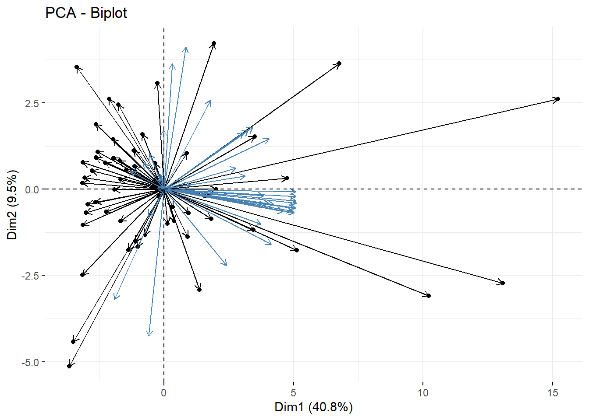

# Load necessary libraries
library(tidyverse) # for handling missing values
library(EnvStats) # for rosnerTest
library(caTools)
library(caret)
library(corrplot)
library(Metrics)
library(car) # for outliers test
library(corrr) # correlation matrix
library(ggcorrplot) # correlation graph
library(FactoMineR) # PCA analysis
library(factoextra) # PCA plots
library(pls) # PC regression
library(e1071) # to fit transform PCA
library(olsrr) # outliers, leverage plot5 Analysis
5.1 Libraries
5.2 01 - Data Preparation
In the previous Dataset section, we renamed the variables to be more significant, and easier to make inference. Moreover, we imputed the missing values with the Mean.
5.3 02 - Feature Scaling
- Standardization ensures all features are on the same scale, and this method is less sensitive to outliers.
# Find the index position of the target feature
target_name <- "expected_survival"
target_index <- grep(target_name,
colnames(train_data))# Standardization Numerical Features
train_data_sc <- scale(train_data[, -target_index])5.4 03 - PCA Requirements
5.4.1 Outliers Detection
- There are some outliers in the data frame.
- However, there are three outliers with no high leverage.
# Plot a boxplot to visualize potential outliers
boxplot(train_data_sc, main = "Outliers Detection")
5.4.2 Leverage
set.seed(my_seed)
# Fit regression model
ordinary_model <- lm(expected_survival ~ ., data = train_data)
# Print the model summary
summary(ordinary_model)
# Residual Diagnostics
ols_plot_resid_lev(ordinary_model)
5.4.3 Removing Outliers
After removing one outlier from the dataset, we discovered that the final results produced minimal variability. Therefore, we decided to present a model that captures all the data points’ information; thus, no observations will be removed from the final model.
# No Outliers subset
no_outliers_df <- slice(train_data, -c(56))
set.seed(my_seed)
# Fit regression model
no_outliers_model <- lm(expected_survival ~ ., data = no_outliers_df)
# Print the model summary
summary(no_outliers_model)
# Residual Diagnostics
ols_plot_resid_lev(no_outliers_model)5.4.4 Correlations
There are high correlated features.
Multicollinearity is present in the data set.
# Calculate correlations and round to 2 digits
corr_matrix <- cor(train_data_sc)
corr_matrix <- round(corr_matrix, digits = 2)
# Print names of highly correlated features; threshold > 0.30
high <- findCorrelation(corr_matrix, cutoff = 0.30, names = TRUE)
high [1] "expected_transfusion"
[2] "better_infection"
[3] "expected_hospitalization"
[4] "expected_hospital_readmission"
[5] "expected_fistula"
[6] "prevalent_transplant_waitlist_expected"
[7] "incident_transplant_waitlist_expected"
[8] "expected_infection"
[9] "worse_survival"
[10] "incident_transplant_waitlist_better"
[11] "better_hospital_readmission"
[12] "worse_transfusion"
[13] "worse_hospital_readmission"
[14] "worse_fistula"
[15] "incident_transplant_waitlist_worse"
[16] "better_fistula"
[17] "prevalent_transplant_waitlist_better"
[18] "better_survival"
[19] "worse_infection"
[20] "phosphorus (5.6 - 7) Mg"
[21] "prevalent_transplant_waitlist_worse"
[22] "phosphorus (3.5 - 4.5) Mg"
[23] "phosphorus > 7Mg"
[24] "better_transfusion"
[25] "Hgb 10g"
[26] "hypercalcemia_calcium > 10.2Mg"
[27] "pediatric_nPCR"
[28] "long_term_catheter" 5.5 Full Model Regression
- The Adjusted R^2 = 99.99% is an indication of over-fitting, or bias.
set.seed(my_seed)
# Fit a multiple linear regression model
full_model <- lm(expected_survival ~ ., data = train_data)
# Print a summary of the regression model
summary(full_model)
Call:
lm(formula = expected_survival ~ ., data = train_data)
Residuals:
Min 1Q Median 3Q Max
-1.44543 -0.31575 -0.05481 0.39273 1.13134
Coefficients:
Estimate Std. Error t value Pr(>|t|)
(Intercept) 93.7141729 41.8771301 2.238 0.038114
better_transfusion 1.0433623 0.7504271 1.390 0.181374
expected_transfusion 0.0011165 0.0339108 0.033 0.974098
worse_transfusion 0.1321425 0.0752163 1.757 0.095943
better_infection -0.2665210 0.0913321 -2.918 0.009178
expected_infection -0.0353924 0.0617830 -0.573 0.573833
worse_infection -0.1114838 0.2720510 -0.410 0.686796
Kt_v_1.2 0.2515467 0.2538274 0.991 0.334814
Kt_v_1.7 -0.0002502 0.0523052 -0.005 0.996236
pedriatic_Kt_v_1.2 -0.0399970 0.0330110 -1.212 0.241322
pediatric_Kt_v_1.8 -0.0179608 0.0095227 -1.886 0.075523
pediatric_nPCR 0.0444777 0.0254264 1.749 0.097275
better_fistula -0.1839466 0.1065136 -1.727 0.101292
expected_fistula 0.0061566 0.0750108 0.082 0.935492
worse_fistula -0.0301080 0.1060795 -0.284 0.779783
long_term_catheter 0.3116122 0.0743814 4.189 0.000551
`hypercalcemia_calcium > 10.2Mg` -0.1874432 0.0881679 -2.126 0.047599
`phosphorus < 3.5Mg` 0.3493258 0.4794052 0.729 0.475581
`phosphorus (3.5 - 4.5) Mg` -1.7332425 0.4642343 -3.734 0.001521
`phosphorus (4.6 - 5.5) Mg` -1.3625429 0.4593524 -2.966 0.008270
`phosphorus (5.6 - 7) Mg` -0.7983529 0.4384021 -1.821 0.085264
`phosphorus > 7Mg` -1.4438916 0.4577542 -3.154 0.005486
better_hospitalization 0.0845105 0.3231725 0.262 0.796674
expected_hospitalization 0.7045325 0.1549119 4.548 0.000249
worse_hospitalization 0.5177565 0.2210441 2.342 0.030859
better_hospital_readmission 0.3755861 0.2422979 1.550 0.138521
expected_hospital_readmission 0.3149471 0.1346618 2.339 0.031081
worse_hospital_readmission 0.0922372 0.2390186 0.386 0.704094
better_survival -0.5713254 0.1451346 -3.937 0.000967
worse_survival -0.9107860 0.1372411 -6.636 3.14e-06
incident_transplant_waitlist_better 0.0124309 0.1326932 0.094 0.926397
incident_transplant_waitlist_expected 0.0335712 0.0407496 0.824 0.420813
incident_transplant_waitlist_worse 0.3111204 0.1192201 2.610 0.017736
prevalent_transplant_waitlist_better 0.1505592 0.1108400 1.358 0.191136
prevalent_transplant_waitlist_expected 0.0410843 0.1012918 0.406 0.689815
prevalent_transplant_waitlist_worse 0.0060570 0.1878661 0.032 0.974635
`Hgb 10g` -0.1026231 0.0478780 -2.143 0.045990
`Hgb 12g` -0.3572380 0.6630944 -0.539 0.596664
(Intercept) *
better_transfusion
expected_transfusion
worse_transfusion .
better_infection **
expected_infection
worse_infection
Kt_v_1.2
Kt_v_1.7
pedriatic_Kt_v_1.2
pediatric_Kt_v_1.8 .
pediatric_nPCR .
better_fistula
expected_fistula
worse_fistula
long_term_catheter ***
`hypercalcemia_calcium > 10.2Mg` *
`phosphorus < 3.5Mg`
`phosphorus (3.5 - 4.5) Mg` **
`phosphorus (4.6 - 5.5) Mg` **
`phosphorus (5.6 - 7) Mg` .
`phosphorus > 7Mg` **
better_hospitalization
expected_hospitalization ***
worse_hospitalization *
better_hospital_readmission
expected_hospital_readmission *
worse_hospital_readmission
better_survival ***
worse_survival ***
incident_transplant_waitlist_better
incident_transplant_waitlist_expected
incident_transplant_waitlist_worse *
prevalent_transplant_waitlist_better
prevalent_transplant_waitlist_expected
prevalent_transplant_waitlist_worse
`Hgb 10g` *
`Hgb 12g`
---
Signif. codes: 0 '***' 0.001 '**' 0.01 '*' 0.05 '.' 0.1 ' ' 1
Residual standard error: 1.052 on 18 degrees of freedom
Multiple R-squared: 1, Adjusted R-squared: 0.9999
F-statistic: 2.69e+04 on 37 and 18 DF, p-value: < 2.2e-165.6 04 - PCA Analysis
5.6.1 SVD - Singular Value Decomposition
We will focus on Singular Value Decomposition which is a classic approach for PCA analysis.
Singular Value Decomposition is a factorization technique used in linear algebra to decompose a matrix into three matrices.
U: A matrix whose columns are the left singular vectors of the original matrix.
D: A diagonal matrix whose entries are the singular values of the original matrix.
V: A matrix whose columns are the right singular vectors of the original matrix.
The SVD is closely related to the eigenvalue decomposition (EVD), which is another factorization technique used in linear algebra. While the EVD can only be applied to square matrices, the SVD can be applied to any matrix, including rectangular matrices. The SVD is also more numerically stable than the EVD, making it a preferred method for many applications.
- Note: The Spectral Decomposition approach is used with the princomp() function.
# Apply PCA using prcomp()
data_pca <- prcomp(train_data_sc, center = TRUE, scale. = TRUE)
summary(data_pca)Importance of components:
PC1 PC2 PC3 PC4 PC5 PC6 PC7
Standard deviation 3.885 1.87172 1.83774 1.74868 1.4227 1.25078 1.12796
Proportion of Variance 0.408 0.09468 0.09128 0.08265 0.0547 0.04228 0.03439
Cumulative Proportion 0.408 0.50269 0.59397 0.67661 0.7313 0.77360 0.80799
PC8 PC9 PC10 PC11 PC12 PC13 PC14
Standard deviation 1.09332 0.94491 0.90813 0.81855 0.7790 0.68145 0.63663
Proportion of Variance 0.03231 0.02413 0.02229 0.01811 0.0164 0.01255 0.01095
Cumulative Proportion 0.84029 0.86442 0.88671 0.90482 0.9212 0.93378 0.94473
PC15 PC16 PC17 PC18 PC19 PC20 PC21
Standard deviation 0.57103 0.50547 0.5018 0.48845 0.46247 0.4169 0.35338
Proportion of Variance 0.00881 0.00691 0.0068 0.00645 0.00578 0.0047 0.00338
Cumulative Proportion 0.95354 0.96045 0.9673 0.97370 0.97948 0.9842 0.98755
PC22 PC23 PC24 PC25 PC26 PC27 PC28
Standard deviation 0.32474 0.28837 0.26042 0.22590 0.21491 0.19820 0.16698
Proportion of Variance 0.00285 0.00225 0.00183 0.00138 0.00125 0.00106 0.00075
Cumulative Proportion 0.99040 0.99265 0.99448 0.99586 0.99711 0.99817 0.99893
PC29 PC30 PC31 PC32 PC33 PC34 PC35
Standard deviation 0.12679 0.10914 0.08380 0.05094 0.03167 0.02871 0.01433
Proportion of Variance 0.00043 0.00032 0.00019 0.00007 0.00003 0.00002 0.00001
Cumulative Proportion 0.99936 0.99968 0.99987 0.99994 0.99997 0.99999 1.00000
PC36 PC37
Standard deviation 0.008057 0.004918
Proportion of Variance 0.000000 0.000000
Cumulative Proportion 1.000000 1.0000005.6.2 PCA - Elements
The values in
data_pca$xare the coordinates of each observation in the new principal component space. These coordinates are the scores for each observation along each principal component.The eigenvectors of the covariance or correlation matrix of the data represent the directions of maximum variance or information in the dataset.
# Principal Component scores vector
pc_scores <- data_pca$x
# Std Deviation of Components
component_sdev <- data_pca$sdev
# Eigenvector, or Loadings
eigenvector <- data_pca$rotation
# Mean of variables
component_mean <- data_pca$center
# Scaling factor of Variables
component_scale <- data_pca$scale5.6.3 Loadings of First Two Components
- The loading are the weights assigned to each variable for that particular principal component.
# Access the loadings for the first two principal components
loadings_first_two_components <- eigenvector[, 1:2]
# Print the loadings for the first two principal components
print("Loadings for the first two principal components:")[1] "Loadings for the first two principal components:"print(loadings_first_two_components) PC1 PC2
better_transfusion 0.0505988170 0.015071362
expected_transfusion 0.2535655387 -0.021428805
worse_transfusion 0.2058083243 -0.164735938
better_infection 0.2526036797 -0.007341849
expected_infection 0.2455149674 -0.065172327
worse_infection 0.1381076997 0.063702113
Kt_v_1.2 0.0030888370 0.008117565
Kt_v_1.7 -0.0077627944 0.044354338
pedriatic_Kt_v_1.2 -0.0635839673 0.052731221
pediatric_Kt_v_1.8 -0.0139161654 0.002781654
pediatric_nPCR -0.0394255772 0.076824152
better_fistula 0.1701351094 0.184888641
expected_fistula 0.2521168144 -0.055750964
worse_fistula 0.1932023133 -0.048145074
long_term_catheter -0.0054339687 0.040853832
hypercalcemia_calcium > 10.2Mg -0.0276031313 0.104909219
phosphorus < 3.5Mg 0.0161465158 0.375887922
phosphorus (3.5 - 4.5) Mg 0.0419719997 0.425799543
phosphorus (4.6 - 5.5) Mg 0.0888141257 0.266545080
phosphorus (5.6 - 7) Mg -0.0954250049 -0.329731283
phosphorus > 7Mg -0.0293097443 -0.439982654
better_hospitalization 0.1554828676 0.039769206
expected_hospitalization 0.2534938280 -0.035294582
worse_hospitalization 0.1862740734 -0.104759047
better_hospital_readmission 0.2100006566 -0.046207863
expected_hospital_readmission 0.2537238605 -0.041416989
worse_hospital_readmission 0.2009955081 -0.043217623
better_survival 0.1522860091 0.168831835
worse_survival 0.2288119832 -0.066222930
incident_transplant_waitlist_better 0.2015728228 0.151287289
incident_transplant_waitlist_expected 0.2498798110 -0.057824581
incident_transplant_waitlist_worse 0.1912997762 -0.019853974
prevalent_transplant_waitlist_better 0.1617720280 0.176291623
prevalent_transplant_waitlist_expected 0.2500769232 -0.070274998
prevalent_transplant_waitlist_worse 0.1201730964 -0.228472026
Hgb 10g -0.0298792287 -0.080370928
Hgb 12g -0.0005836729 0.1764813185.6.4 PCA - Cumulative Variance
# Proportion of variance explained by each PC
variance_explained <- component_sdev^2 / sum(component_sdev^2)
# Cumulative proportion of variance explained
cumulative_variance_explained <- cumsum(variance_explained)
cumulative_variance_explained [1] 0.4080054 0.5026901 0.5939685 0.6766143 0.7313169 0.7735996 0.8079857
[8] 0.8402922 0.8644234 0.8867126 0.9048213 0.9212244 0.9337751 0.9447292
[15] 0.9535419 0.9604473 0.9672517 0.9736998 0.9794804 0.9841779 0.9875530
[22] 0.9904031 0.9926506 0.9944835 0.9958627 0.9971109 0.9981727 0.9989263
[29] 0.9993607 0.9996827 0.9998725 0.9999427 0.9999698 0.9999920 0.9999976
[36] 0.9999993 1.00000005.6.5 PCA - Number of Principal Components
- We conclude that 9 Principal Components explain 86% of the variance.
# Retain components that explain a percentage of the variance
num_components <- which(cumulative_variance_explained >= 0.86)[1]
# Select the desired number of principal components
selected_pcs <- pc_scores[, 1:num_components]
selected_pcs PC1 PC2 PC3 PC4 PC5 PC6
1 -3.1377897 0.771802333 -0.73643610 -0.922235383 -0.35927448 0.38542561
2 0.9108769 -1.373614712 -0.89066560 -0.046036426 0.02278572 0.32672341
3 -1.3650210 -1.765641978 -0.14492292 0.259189212 -1.28569119 -0.37616348
4 -3.0594171 0.334783454 -0.01406268 -0.139540012 0.09202588 -0.28246147
5 -0.1990728 -0.207347300 -0.71486169 -1.375622870 -1.19927381 0.03193723
6 15.2031917 2.618707806 -7.73627571 4.051949166 -0.82443732 -2.82184549
7 -1.1596436 1.121551314 -0.71119818 -0.684236835 0.22859575 -0.38210147
8 -1.7566946 2.446404457 0.23358063 -0.787124212 -0.10982171 -1.06033591
9 -2.5604524 1.078492112 -0.02070808 -0.001800478 -0.24737807 1.19300909
10 -2.2725299 0.767002717 -0.05524655 -1.004506232 2.44302298 -1.80923423
11 10.2100889 -3.095058992 5.56314501 -2.707865857 -3.23281430 -1.47878094
12 5.1285806 -1.770508028 1.78490237 -0.162837263 0.51758150 -0.36715154
13 -3.4958456 -4.420614532 -3.14253662 0.040387883 -0.79275740 0.42165629
14 -1.7133698 0.822955825 -1.96628840 -1.087070858 0.75045171 0.43567043
15 -1.9510677 0.907515363 -0.34586585 -1.470709937 -0.77348447 -0.78101531
16 -2.6295662 0.914891571 -0.52633428 -1.348424988 -0.93480439 0.51812412
17 4.7463371 0.314584946 2.37090668 -0.252790732 0.83290377 1.42903927
18 0.3868186 -0.929048000 0.68704793 -0.611740653 1.53736445 -0.11125974
19 -1.6766975 0.284981397 -0.98417172 -1.813309386 -0.81355933 0.75181767
20 -0.7344809 -1.322183158 0.37001336 -0.844751806 2.05528745 -1.60184302
21 0.9392629 -0.699900216 -0.13989705 -0.597819034 -0.02027423 -0.00460663
22 -0.8326091 1.587389983 -0.73121315 0.290973848 0.11987111 1.10998873
23 0.8724526 1.045058855 0.27746739 0.217533123 -0.62257760 0.54288629
24 -2.7729541 0.532823236 -0.38569030 -0.934135557 0.89428334 -2.72370097
25 2.0146426 0.001409232 0.64033906 -0.692861288 -0.16774408 0.45551037
26 -1.1376241 0.667578303 0.06120837 0.244365584 -0.44647286 0.92651259
27 0.1255818 -0.995109875 1.15033009 -0.489711370 0.71084468 1.38539681
28 -3.6485929 -5.124718566 0.04913529 6.332224295 -1.44380969 1.47256020
29 -0.3307121 0.279250049 -0.09852864 -0.338816118 -0.59497247 -0.57611719
30 -3.1386137 -2.484679699 -2.00441012 1.066087068 -0.58765600 -0.02923877
31 1.8304255 -0.865860455 -0.62921128 -0.288806050 -0.35848754 1.15223519
32 -2.6299851 1.882042739 1.47902941 1.519749388 0.14837356 0.99433001
33 -1.9654200 1.443737323 0.42388464 -1.421726497 0.34517137 0.14894489
34 -2.9433777 -0.445332786 -0.18685858 0.050108988 -0.34712485 -0.38836224
35 1.9334685 4.227422253 -1.54289340 -0.835373008 -0.54123998 2.37389028
36 -1.4611450 0.555081258 -1.44670031 -0.273171460 0.41677320 -0.33354615
37 -1.6820407 -0.925297600 -0.31774506 -0.273721372 -0.78520268 0.20360927
38 6.7594616 3.638815421 1.05618063 2.351356035 2.49702755 3.43721377
39 3.4506790 -1.182398955 2.56989757 -1.112911235 -0.05458367 1.43612628
40 -1.0983772 -1.524068762 -0.53200487 -0.477669191 -0.99945377 -0.80297280
41 -1.9193470 -0.016455120 -1.08062219 -0.587236913 -0.63239954 -0.20135310
42 3.4962356 1.519916753 1.31092517 -0.300656841 2.59852281 1.04990713
43 -0.2522021 3.071775273 2.14067078 -1.925517343 -2.27190695 -3.40926804
44 -3.0134705 -0.685824171 -1.17123942 -0.855106884 -0.44275792 0.83905452
45 0.3392488 -0.513300425 0.03908522 -0.176642934 -0.59240146 1.05933117
46 -2.1136312 2.610044185 0.53298151 -0.847818228 0.07520510 0.14163876
47 1.3706778 -2.910358069 1.08475124 1.316261684 6.13811703 -2.14363119
48 13.0708364 -2.725721891 0.42574820 -0.475180731 -0.78335087 0.57890473
49 -2.6464920 -0.380710708 -0.69436207 1.036469413 -0.92018764 0.45363960
50 1.7504813 -0.179844084 -0.26891623 -0.341129747 0.60754876 -0.77667306
51 -3.3724826 3.536458694 5.32705688 7.762674701 -2.31626791 -1.79609628
52 -3.1242143 -1.042445343 0.80437184 2.133119681 2.85592676 -0.90733360
53 -1.0176612 -1.671769226 -1.82862519 0.394960511 -0.46534146 0.86157778
54 -0.3396014 0.750547277 0.95957147 -0.301395219 0.57260088 0.01894730
55 -2.2360197 -0.655876540 0.77645594 0.231805497 -0.27848656 -0.34479229
56 -3.1511256 0.180665062 -1.07019444 -0.491205128 -0.21428914 -0.62572389
PC7 PC8 PC9
1 1.76446455 0.71374642 -1.27763836
2 1.90946042 0.32026834 0.31575168
3 -0.78560815 -0.92036817 -1.26256359
4 -0.12860754 0.13732138 0.07796673
5 0.74994371 0.71599423 -0.19541169
6 -0.39368588 0.75396577 0.12358783
7 -0.51476890 -1.37312839 0.55597712
8 -0.14340022 -1.64114704 1.14619211
9 -0.12337260 1.64840877 1.12228458
10 1.30112932 0.04017681 0.78534979
11 -1.01949796 0.39458663 0.01823775
12 1.27365641 0.38385941 -0.19143125
13 0.10866259 -1.13950353 -1.57906009
14 1.10103413 0.88533889 -1.19056845
15 -1.01157314 -1.47740924 0.22146676
16 0.35695340 0.88633035 -0.44875630
17 -0.84922663 0.01277585 -0.04793206
18 0.22648544 0.76907240 -0.83845390
19 0.84498090 -0.26045393 0.78929137
20 0.75707090 -1.18661916 1.67512391
21 1.31702137 0.49437991 0.47455077
22 -1.64549969 1.13118828 -0.04484940
23 -0.21184648 0.96993606 1.61645155
24 -0.47378261 -2.62659005 1.14510308
25 -0.38399443 0.27541717 1.00447793
26 -0.69664564 0.94135363 0.17566660
27 0.02791903 -0.36150463 -0.45207374
28 -0.77192847 -0.90604294 2.92091797
29 2.01369673 0.05235085 0.94851213
30 -0.76889273 -0.04319356 -0.93018809
31 1.40987972 -0.23868533 0.11171350
32 1.01379575 1.75474773 -0.29044327
33 0.22672970 0.82917850 0.05368812
34 -1.84413987 0.45197913 0.38530687
35 -0.29186460 0.24777941 0.05260103
36 0.03060274 1.07595713 -0.12917118
37 -0.46866588 0.53016534 -0.43879593
38 -1.42758292 -3.60748873 -1.60176642
39 -0.65914865 -1.03448059 -0.16051740
40 -0.19504945 -1.60842789 -0.69636619
41 -1.31580368 -1.30270411 0.17184914
42 -0.23125332 -0.09689562 0.84640868
43 -2.15443994 0.22710813 -1.25870358
44 -1.00388333 0.40847078 -0.11206689
45 1.16629583 0.52067375 -0.32481693
46 1.09265840 -0.35878735 1.34775109
47 0.97170555 0.19459095 -1.28733565
48 0.96197055 0.51964456 -0.22818731
49 0.21464465 -0.60479462 -0.75320369
50 -0.00577914 0.27805102 1.52332281
51 2.17235909 -0.18750827 -1.11305739
52 -3.95021078 3.06573217 -0.25289702
53 -0.24568069 -0.17110049 -0.38166238
54 -0.04332971 0.06369494 0.62713705
55 -0.03710043 0.79675151 -1.07516939
56 0.78314261 -1.34416256 -1.673600425.7 05 - Visualization
5.7.1 Scree Plot - Cumulative Variance Explained
PC1 explains 40.8% variance.
PC2 explains 9.5% variance.
fviz_eig(data_pca, addlabels = TRUE)
5.7.2 Biplot
The correlation between a variable and a principal component (PC) is used as the coordinates of the variable on the PC. The representation of variables differs from the plot of the observations: The observations are represented by their projections, but the variables are represented by their correlations (Abdi and Williams 2010).
PC1 is represented in black which displays the longest distance of its projection.
PC2 is represented in blue which displays a shorter distance as expected.
fviz_pca_biplot(data_pca,
geom = c("point", "arrow"),
geom.var = "arrow")
5.7.3 Correlation Circle
The plot below is also known as variable correlation plots. It shows the relationships between all variables. It can be interpreted as follow:
Positively correlated variables are grouped together.
Negatively correlated variables are positioned on opposite sides of the plot origin (opposed quadrants).
The distance between variables and the origin measures the quality of the variables on the factor map. Variables that are away from the origin are well represented on the factor map.
# Control variable colors using their contributions
fviz_pca_var(data_pca, col.var = "contrib",
gradient.cols = c("white", "blue", "red"),
geom.var = "arrow",
ggtheme = theme_minimal())
5.7.4 Variable Contribution
Top variable contribution for the first two principal components.
# Contributions of variables to PC1
pc2_contribution <- fviz_contrib(data_pca, choice = "var", axes = 1, top = 20)
# Modify the theme to rotate X-axis labels to 90 degrees
pc2_contribution +
theme(
axis.text.x = element_text(angle = 0),
plot.title = element_text(hjust = 0) # horizontal justification
) +
coord_flip() +
labs(title = "Contribution of Variables to PC1",
y = "Percentage Contribution",
x = "",
caption = "PC1 explains 40.8% variance") +
scale_y_continuous(labels = scales::percent_format(scale = 1,
accuracy = 1))
# Contributions of variables to PC2
pc2_contribution <- fviz_contrib(data_pca, choice = "var", axes = 2, top = 12)
# Modify the theme to rotate X-axis labels to 90 degrees
pc2_contribution +
theme(
axis.text.x = element_text(angle = 0),
plot.title = element_text(hjust = 0) # horizontal justification
) +
coord_flip() +
labs(title = "Contribution of Variables to PC2",
y = "Percentage Contribution",
x = "",
caption = "PC2 explains 9.5% variance") +
scale_y_continuous(labels = scales::percent_format(scale = 1,
accuracy = 1))
5.8 06 - Model Building
5.8.1 Data Splitting into Training & Test set
# reproducible random sampling
set.seed(my_seed)
# Create Target y-variable for the training set
y <- train_data$expected_survival
# Split the data into training and test sets
split <- sample.split(y, SplitRatio = 0.7)
training_set <- subset(train_data, split == TRUE)
test_set <- subset(train_data, split == FALSE) 5.8.2 Feature Scaling: Standardization
It is important to Mean-Center the data prior to PCA model building to ensure the first Principal Component is in the direction of maximum variance.
Standardization produces Mean = 0, and Variance = 1.
# Feature Scaling: Standardization
# Perform centering and scaling on the training and test sets
sc <- preProcess(training_set[, -target_index],
method = c("center", "scale"))
training_set[, -target_index] <- predict(
sc, training_set[, -target_index])
test_set[, -target_index] <- predict(sc, test_set[, -target_index])
# training_set[,-target_index] = scale(training_set[, -target_index])
# test_set[,-target_index] = scale(test_set[, -target_index])5.8.3 Applying PCA to Training & Test sets
# Perform Principal Component Analysis (PCA) preprocessing on the training data
pca <- preProcess(training_set[, -target_index],
method = 'pca', pcaComp = 8)
# Apply PCA transformation to original training set
training_set <- predict(pca, training_set)
# Reorder columns, moving the dependent feature index to the end
training_set <- training_set[c(2:9, 1)]
# Apply PCA transformation to original test set
test_set <- predict(pca, test_set)
# Reorder columns, moving the dependent feature index to the end
test_set <- test_set[c(2:9, 1)]5.8.4 PRESS & Predicted R^2 Functions
#PRESS - predicted residual sums of squares
PRESS <- function(linear.model) {
# calculate the predictive residuals
pr <- residuals(linear.model)/(1-lm.influence(linear.model)$hat)
# calculate the PRESS
PRESS <- sum(pr^2)
return(PRESS)
}
pred_r_squared <- function(linear.model) {
# Use anova() to get the sum of squares for the linear model
lm.anova <- anova(linear.model)
# Calculate the total sum of squares
tss <- sum(lm.anova$'Sum Sq')
# Calculate the predictive R^2
pred.r.squared <- 1-PRESS(linear.model)/(tss)
return(pred.r.squared)
}5.8.5 PCA Full Model - 8 Principal Components
# reproducible random sampling
set.seed(my_seed)
# Fit a multiple linear regression model
pca_full_model <- lm(expected_survival ~ ., data = training_set)
# Print a summary of the regression model
summary(pca_full_model)
Call:
lm(formula = expected_survival ~ ., data = training_set)
Residuals:
Min 1Q Median 3Q Max
-36.203 -9.273 2.228 6.583 35.083
Coefficients:
Estimate Std. Error t value Pr(>|t|)
(Intercept) 97.0513 2.8389 34.187 < 2e-16 ***
PC1 29.4050 0.7133 41.222 < 2e-16 ***
PC2 4.5890 1.3329 3.443 0.00172 **
PC3 -1.1111 1.6420 -0.677 0.50381
PC4 4.9871 1.7472 2.854 0.00775 **
PC5 -3.2728 2.2463 -1.457 0.15552
PC6 6.9790 2.4355 2.866 0.00754 **
PC7 -6.6036 2.5605 -2.579 0.01505 *
PC8 3.8007 2.8211 1.347 0.18799
---
Signif. codes: 0 '***' 0.001 '**' 0.01 '*' 0.05 '.' 0.1 ' ' 1
Residual standard error: 17.73 on 30 degrees of freedom
Multiple R-squared: 0.983, Adjusted R-squared: 0.9785
F-statistic: 217.3 on 8 and 30 DF, p-value: < 2.2e-16# Calculate PRESS
cat("PRESS: ", PRESS(pca_full_model), "\n")PRESS: 31662.39 # Calculate predicted R^2
cat("Predicted R^2: ", pred_r_squared(pca_full_model), "\n")Predicted R^2: 0.9430373 5.8.6 Visualization of Uncorrelated PCA Matrix
# Visual of Principal Components un-correlation
corr_matrix <- cor(training_set)
ggcorrplot(corr_matrix)
5.9 PCA - 2 Principal Components
# Create a subset with 2 principal components
significant_pcs = c(1,2,9)
train_pca <- training_set[, significant_pcs]
test_pca <- test_set[, significant_pcs]# reproducible random sampling
set.seed(my_seed)
# Fit a multiple linear regression model
reg_model <- lm(expected_survival ~ .,
data = train_pca)
# Print a summary of the regression model
summary(reg_model)
Call:
lm(formula = expected_survival ~ ., data = train_pca)
Residuals:
Min 1Q Median 3Q Max
-71.156 -9.381 -3.187 8.080 59.653
Coefficients:
Estimate Std. Error t value Pr(>|t|)
(Intercept) 97.0513 3.5849 27.073 < 2e-16 ***
PC1 29.4050 0.9008 32.644 < 2e-16 ***
PC2 4.5890 1.6832 2.726 0.00983 **
---
Signif. codes: 0 '***' 0.001 '**' 0.01 '*' 0.05 '.' 0.1 ' ' 1
Residual standard error: 22.39 on 36 degrees of freedom
Multiple R-squared: 0.9675, Adjusted R-squared: 0.9657
F-statistic: 536.5 on 2 and 36 DF, p-value: < 2.2e-16# Calculate PRESS
cat("PRESS: ", PRESS(reg_model), "\n")PRESS: 25699.6 # Calculate predicted R^2
cat("Predicted R^2: ", pred_r_squared(reg_model), "\n")Predicted R^2: 0.9537647 5.9.1 Principal Components Regression
- PCA is used to calculate principal components that can then be used in principal components regression. This type of regression is often used when multicollinearity exists between predictors in a data set.
# reproducible random sampling
set.seed(my_seed)
y = train_pca$expected_survival
# fit PCR
pcr_model <- pcr(y ~ PC1+PC2, data=train_pca, validation="CV")
summary(pcr_model)Data: X dimension: 39 2
Y dimension: 39 1
Fit method: svdpc
Number of components considered: 2
VALIDATION: RMSEP
Cross-validated using 10 random segments.
(Intercept) 1 comps 2 comps
CV 122.5 36.39 24.27
adjCV 122.5 34.68 24.11
TRAINING: % variance explained
1 comps 2 comps
X 77.74 100.00
y 96.08 96.755.9.2 Repeated Cross-Validation
# reproducible random sampling
set.seed(my_seed)
# Repeated cross-validation with 5 folds, 3 repetitions
train_control <- trainControl(method = "repeatedcv",
number = 10, repeats = 3)
# training the model
model_cv_repeat <- train(expected_survival ~ .,
data = train_pca,
method = "lm",
trControl = train_control)
# Print Overall Model Performance
print(model_cv_repeat)Linear Regression
39 samples
2 predictor
No pre-processing
Resampling: Cross-Validated (10 fold, repeated 3 times)
Summary of sample sizes: 35, 35, 35, 35, 35, 35, ...
Resampling results:
RMSE Rsquared MAE
21.19074 0.9728849 16.05276
Tuning parameter 'intercept' was held constant at a value of TRUE5.9.3 Cross-Validation
# reproducible random sampling
set.seed(my_seed)
# Cross-validation with n folds
k_10 <- trainControl(method = "cv", number = 10)
# training the model
model_cv <- train(expected_survival ~ .,
data = train_pca,
method = "lm",
trControl = k_10)
# Print Model Performance
print(model_cv)Linear Regression
39 samples
2 predictor
No pre-processing
Resampling: Cross-Validated (10 fold)
Summary of sample sizes: 35, 35, 35, 35, 35, 35, ...
Resampling results:
RMSE Rsquared MAE
21.7825 0.9761582 16.14872
Tuning parameter 'intercept' was held constant at a value of TRUEcv_results = model_cv$results5.10 07 - Predictions
# Find the index position of the target feature
pred_target_index <- grep(target_name,
colnames(test_pca))
cat("Target Feature Index =", pred_target_index)Target Feature Index = 3# Create Predicted Target Feature (y-test)
y_test <- test_pca[pred_target_index]# Predictions using the Cross-Validation model
y_pred = predict(model_cv, newdata = test_pca[, -pred_target_index])# Prediction Results from y_predictions
round(y_pred, digits = 0) 9 11 12 16 17 18 21 23 25 26 28 40 43 47 48 52 53
35 520 310 26 298 125 159 149 191 81 2 86 113 182 585 33 88 # Transform y_test from data frame to numeric
y_test_numeric <- as.numeric(unlist(y_test))
# Original data
y_test_numeric [1] 16 442 318 25 284 152 160 141 197 95 2 78 38 171 657 7 925.10.1 Prediction Metrics
# Calculate Mean Absolute Error (MAE)
mae_value <- mae(y_pred, y_test_numeric)
cat("MAE =", mae_value)MAE = 21.90924# Calculate MSE
mse_predict <- mean((y_pred - y_test_numeric)^2)
cat("\nMSE =", mse_predict)
MSE = 1140.189# Calculate RMSE
rmse_predict <- sqrt(mean((y_pred - y_test_numeric)^2))
cat("\nRMSE =", rmse_predict)
RMSE = 33.76669# Calculate R-squared (R^2)
predicted_r2 <- 1 - sum((y_test_numeric - y_pred)^2) /
sum((y_test_numeric - mean(y_test_numeric))^2)
cat("\nPredicted R^2 =", predicted_r2)
Predicted R^2 = 0.96004835.11 08 - Training Conclusion
In conclusion, this project has demonstrated the effectiveness of Principal Component Analysis (PCA) in dimension reduction with the following key points:
PCA was able to reduce from 37 features down to just 2 principal components.
The best score of R^2 = 97.61% was from the Linear Regression with Cross-validation model.
The predicted R^2 = 96%
The average deviation between the predicted values, and observed values for ‘Expected Survival’ is RMSE = 33.77.
The model has not been exposed to unseen data with a large amount of observations to asses its robustness, and reliability.